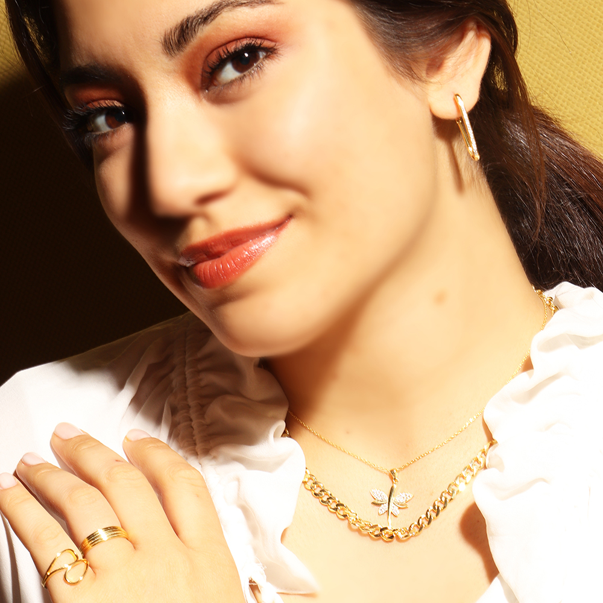
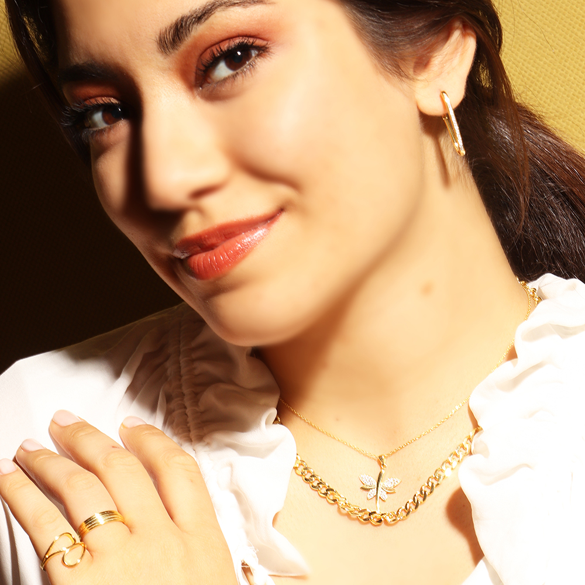

Kendi Takı Kombinini Oluştururken Dikkat Etmen Gerekenler
Günlük stilinize farklı bir hava katmak ya da özel bir etkinlikte tarzınızla öne çıkmak için, çoklu takı kullanımı kombininize kendi imzanızı atmanın ve kişisel tarzınızı öne çıkarmanın mükemmel bir yoludur. Farklı stilleri ve materyalleri bir araya getirerek benzersiz bir görünüm elde etmek oldukça keyiflidir. Ancak bu kombini oluştururken dikkat edilmesi gereken bazı noktalar var. İşte kendi takı kombinlerinizi oluştururken göz önünde bulundurmanız gereken ipuçları:

 

1. Farklı Uzunluklar ve Boyutlar Seçin
Takılarınızı dengeli bir şekilde kullanmak, şıklığın anahtarıdır. Farklı uzunluklarda kolyeler: Boynunuzu ve dekoltenizi öne çıkarır. Kısa kolyeler boynunuzu vurgularken, orta uzunluktaki kolyeler odak noktası oluşturur. Uzun kolyeler ise genel görünümü tamamlayarak katmanlama etkisi sunar.

2. Malzemeleri ve Dokuları Kombinleyin
Altın, gümüş, inci veya doğal taşlar… Hepsi bir arada kullanılabilir! Farklı materyalleri harmanlamak, görünümünüze derinlik katar. Örneğin:Mat ve parlak yüzeyler, şık bir kontrast oluşturur.Doğal taşlar ve metalik detaylar hem modern hem de zarif bir etki yaratır.
3. Takılarınızın Temasını Belirleyin
Birbiriyle uyumlu görünen takılar seçmek için bir tema
oluşturabilirsiniz:
Romantik: Kalp figürleri ve zarif taşlı parçalar.
Bohem: Nazar boncukları ve doğal taşlarla
süslenmiş tasarımlar.
Modern: Minimal çizgiler ve geometrik şekiller.


4. Fazlalıktan Kaçının
Çok fazla takı kullanmak, şıklığı gölgeleyebilir. Takılarınızı sade bir kıyafetle eşleştirerek dengeli bir görünüm yakalayabilirsiniz. Kendi tarzınızı yansıtırken, aşırıya kaçmamaya dikkat edin.
5. Gündüzden Geceye Uyarlanabilen Stiller Deneyin
Gündüz iş stilinizden gece şıklığına kolayca geçiş yapabilmek için esnek kombinler oluşturun. Günlük takılarınıza birkaç parlak veya taşlı detay ekleyerek anında geceye uygun hale getirebilirsiniz.

Çoklu takı kullanımı, stilinizi ifade etmenin özgün bir yoludur. Farklı tasarımlar ve materyalleri bir araya getirerek eşsiz bir görünüm yaratabilirsiniz. Şimdi takı kutunuzu gözden geçirin ve hayalinizdeki kombinleri oluşturmaya başlayın! Hadi, kendi tarzınızı ortaya koyan kombinler yapın ve ışıldayın!